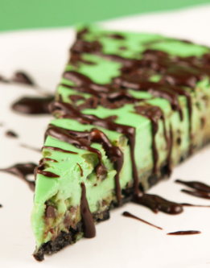
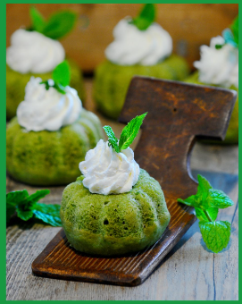
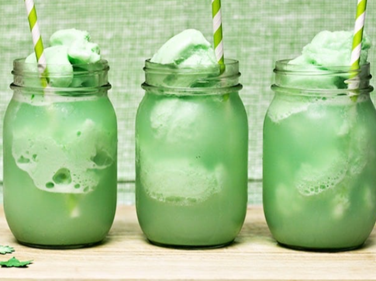
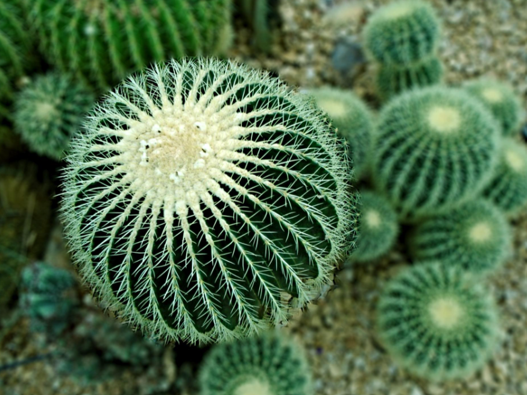
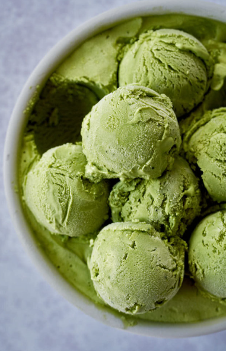
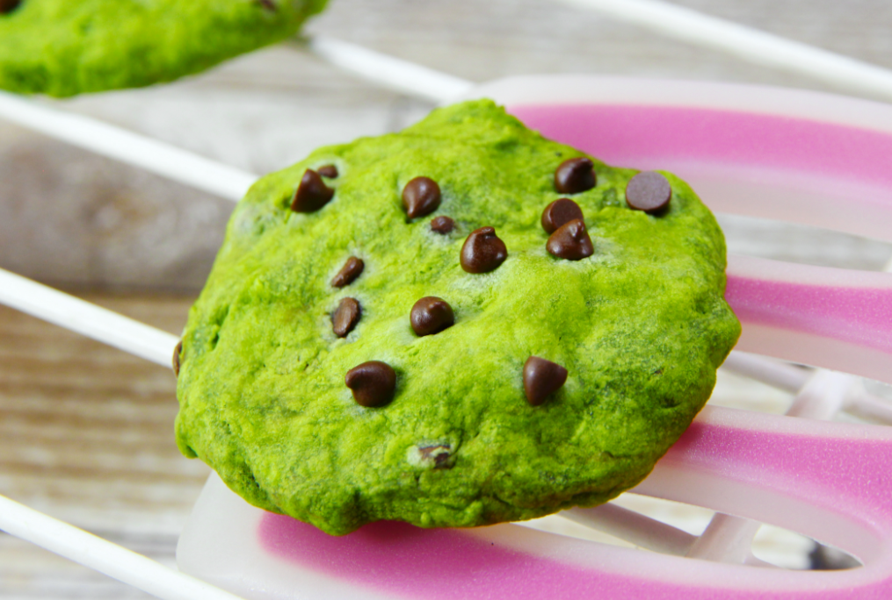

Mountain Dew cheesecake. The cheese mander from the milk of an angler fish. The cake taken from the great wooly mammoth
The miniature mountain dew bundt cakes. The Bundt, taken from the soul of a green duckling. The frosting made from grinded up unicorn hair.
This one is a simpler recipe. The true secret is that we just put mountain dew in a fancy jar and splash some whipped creme and vanilla ice cream on the top of it.
This may look like a cactus, and it is! This is a baking recipe to make/grow a real cactus and then feed it to your friends, telling them it is not actually cactus because you found it on this website.
The ice taken from the glaciers of the very iceberg that crushed the titanic. The mountain dew from other recipes as well, stuffed into a wonderous desert of childhood joy.
The mountain dew cookie is my personal favorite on the gallery. It has the perfent ballance of crunchy and soft and the milkiest chocolate chips in the world.
